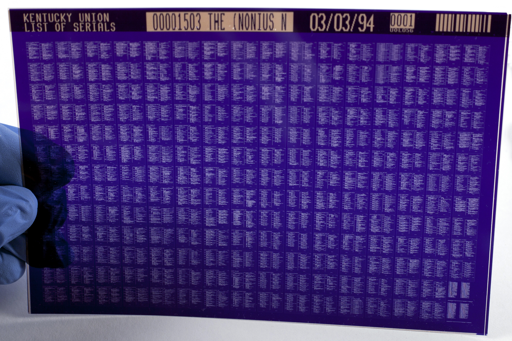

Microform is a generic term used to describe formats containing microreproductions of documents and images. Microforms can be plastic film (microfilm, microfiche), paper (microcard, microprint), or a combination of the two (aperture card, a microfilm cell embedded in a punchcard). Microfilm is a roll film, and microfiche is a sheet film: either may contain negative or positive images, but negatives are more common. A microcard, like any photo print, is a photosensitive paper card, while a microprint is simply ink printed on a card. An aperture card is a microfilm image or cell mounted in a punch card. Information regarding the photographic film formats (microfilm, microfiche) listed below presumes predominant use of the silver-gelatin image process. For information on alternative image processes, see diazo, vesicular, and other microfilms in Microfilm Processes below.
Microfilm roll.Microfilm roll in a box.Acetate microfilm roll and cannister.Microfilm reel.Microfilm reel, paper tag and button tieMicrofilm storage cabinet. Image by Wikimedia Commons user Lhsunshine, available under a Creative Commons Attribution-ShareAlike license (CC BY-SA 3.0)Microfilm reels in reader device. Note the blue hue of the film--this is vesicular microfilm. Image by Flickr user Ben Crowder, available under a Creative Commons Attribution-NonCommercial-ShareAlike license (CC BY-NC-SA 2.5).
Synonyms
Roll film
Dates
1935 – present
Image Tone
Monochrome (B&W: silver-gelatin, diazo; light blue: vesicular); color (diazo)
Description
Microfilm is comprised of a plastic support (nitrate, acetate, or polyester) with a silver-gelatin emulsion. It is typically unperforated 16mm or 35mm roll film. A larger 105mm was used for the transfer to preservation microfiche, but it is only occasionally found in collections. Microfilm images may be positive or, most often, negative. They can be masters or duplicates. Most microfilms are silver-gelatin, but diazo microfilm (dye-based) and vesicular microfilm (thermally processed) may also be present. Rolls are often stored on an open reel or, in some cases, on a cartridge or cassette. A 16mm film roll may be 100 feet, 130 feet, or 215 feet in length; it is used to film legal size or smaller documents. Standard 35mm roll film length is 100 feet and is used to film larger documents. Documents may be filmed in any number of reduction ratios, ranging from 5:1 to 22:1 on 35mm film. 16mm film was usually made using reduction ratios of 18:1 to 24:1.
Composition
Support
Binder
Image
Plastic (Nitrate, Acetate, or Polyester)
Gelatin
Silver
Deterioration
The silver image on a B&W silver-gelatin microfilm is relatively stable. However, all silver-gelatin emulsions are susceptible to redox blemishing (also called "measles" or "microspots") and silver mirroring.
Nitrate: Cellulose nitrate film deterioration is exacerbated by either a humid or dry environment. In a humid environment, the emulsion may soften and become sticky; in a dry environment, the film becomes brittle. Nitrate film forms a solid mass than cannot be separated or handled safely in the final stage of deterioration. Nitrate film deterioration can be identified by the acrid, sharp odor as nitric and nitrous acids are released. These acidic vapors are damaging to surrounding objects, so deteriorating film must be evaluated to determine whether it should be discarded.
Acetate: Cellulose acetate film is susceptible to vinegar syndrome, causing the film base to shrink and the gelatin emulsion to pull up in folds. This form of deterioration is known as channeling. A strong vinegar odor is a telltale symptom in later stages of deterioration. Acetate deterioration is accelerated by humid conditions.
Polyester: Polyester film is inert, considered archival, and has a life expectancy of 500+ years under proper storage conditions.
Risk Level
Nitrate: high; acetate: moderately high; polyester: low. The silver image on a B&W silver-gelatin microfilm is relatively stable but is susceptible to redox blemishing and silver mirroring. Unless the film is polyester, its plastic supports are often unstable and will be prone to deterioration.
In the case of the rare, early period nitrate-based microfilm, preservation risk is very high. Acetate film is at a moderately high risk level and should be monitored closely for signs of deterioration. Polyester-based film is a low preservation risk.
Both nitrate and acetate films may damage nearby materials if they are in an advanced state of deterioration; film displaying signs of deterioration should be separated from other collections and evaluated for conservation, digitization, or discard.
Common Size(s)
16mm (100', 130', or 215' rolls) and 35mm (100' roll). 8mm film was used in European countries.
Background
Microfilm has been produced commercially since the mid-1930s and continues to be produced today, although microform production has steadily declined since the 1990s. Rene Dagron held the first microfilm patent in 1859, but the technology was not widely used for reproducing the printed page until after World War II. Microfilm is often used to create preservation and access copies of rare or deteriorating documents. Microfilm’s rise to popularity began in 1935 when Recordak, a division of Kodak, used a 35mm microfilm camera to film and publish the New York Times on microfilm. Microfilm was quickly adopted as a solution to the many preservation and storage issues inherent in newspaper collections, and it was also widely used for government records. It was used extensively during and after World War II for correspondence and to provide insurance against the potential wartime destruction of documents and archives. Microfilm became more widely used in libraries through the 1950s and 60s, as technology improved and libraries sought storage solutions for their expanding collections. Although microfilm has largely been replaced by digital alternatives, large collections still exist in academic and public libraries, and microfilm is still sometimes used as a preservation solution for materials like newspapers.
Storage Environment
Allowable Fluctuation: ±5°F; ±5% RH
Support
Temp./RH (Ideal range)
Temp./RH (Acceptable range)
Nitrate
< 35°F (2°C); 20–30% RH
< 68°F (20°C); 20–50% RH
Acetate
35°F (2°C) for 20–50% RH
< 68°F (20°C); 20–50% RH
41°F (5°C) for 20–40% RH
45°F (7°C) for 20–30% RH
Polyester
< 68°F (20°C); 20–50% RH
Storage Enclosure(s)
Polyester films should be stored in high-quality sealed metal cans or inert plastic containers (polyester, polyethylene, or polypropylene; not polyvinylchloride [PVC] or vinyl) in order to protect them from gaseous contaminants and to provide a buffer against humidity and temperature changes. Acetate films should be stored in ventilated containers or containers sealed with molecular sieves to allow for off-gassing of acetic acid that occurs in acetate film. All enclosures should pass the Photographic Activity Test. Paper enclosures and boxes should be of high-quality, lignin-free material that is either buffered or neutral. When possible, enclosures that are sealed with adhesive should be avoided, and microfilm should never be secured using a rubber band. Microfilm reels should be individually boxed, with the film held in the wound position by a preservation-quality paper tag secured with a string and button tie. Steel or inert plastic filing cabinets are ideal for microfilm storage, and they should allow enough space for the items to be inserted and removed easily without buckling or curling. Microfilms on different film bases should be stored separately when possible.
Microfiche
Microfiche sheet.Microfiche.Microfiche, negative image.Stack of microfiche sheets.
Synonyms
Fiche
Sheet Film
Dates
Mid-1930s – present
Image Tone
Monochrome (black [silver-gelatin, diazo], light blue [vesicular]) or color (diazo)
Description
Microfiche is comprised of a plastic support (acetate [1930s – 1980s] or polyester [1960s – present]) typically with a silver-gelatin emulsion. Standard microfiche is a flat film measuring 4" × 6" . Microfiche commonly appears as a grid of micro images unreadable without the aid of a light reader. Microfiche images may be positive or negative, masters or duplicates. Most are silver-gelatin, but diazo microfiche (dye-based: light sensitive) and vesicular microfiche (thermally processed: heat sensitive) may also be present. Pages will often be reduced at a ratio of 24x, but also as much as 48x their actual size. Flat film may also be used to capture large documents or engineering drawings at 20x reduction. Some types of microfiche were updateable, allowing new images to be added up to three years after the first image was placed on the fiche. A jacket of microfilm strips are also sometimes referred to as microfiche.
Composition
Support
Binder
Image
Plastic (Acetate or Polyester)
Gelatin
Silver
Deterioration
Acetate: Cellulose acetate film is susceptible to vinegar syndrome, causing the film base to shrink and the gelatin emulsion to pull up in folds. A strong vinegar odor is a telltale symptom in later stages of deterioration. Acetate deterioration is accelerated by humid conditions.
Polyester: Polyester film is inert, considered archival, and has a life expectancy of 500+ years under proper storage conditions.
Regardless of the film base, all silver-gelatin microfiche is susceptible to redox blemishes (also called "measles" or "microspots").
Risk Level
Acetate: moderately high; polyester: low. The silver image on black-and-white silver-gelatin microfiche is relatively stable. The plastic supports, however, are often unstable and prone to deterioration.
Acetate film is at a moderately high risk level and should be monitored closely for signs of deterioration. Acetate may damage nearby materials if in an advanced state of deterioration; film displaying signs of deterioration should be separated from other collections and evaluated for conservation, digitization, or discard. Polyester-based film is a low preservation risk.
Common Size(s)
4" × 6" from 105 mm film, with microimages arranged in 7 rows and 14 columns for a maximum of 98 pages/fiche. This is the American National Standard, which has been approved by the National Microfilm Association. In Europe, sizes range from 3" × 5" (very common) to 8" × 6", with 3 ½" × 4 ¾" fiche being the most popular.
Background
An early form of microfiche was invented at the turn of the century. Yet, it was not commercially introduced until the mid-1930s, and it did not see widespread adoption until the 1950s. The 4" × 6" microfiche sheet film proliferated in North America throughout the 1960s, when microfilming became part of standard reformatting policy in libraries and government agencies. Microfiche remains available today, although microform production collectively has declined steadily since the 1990s.
Storage Environment
Allowable Fluctuation: ±5°F; ±5% RH
Support
Temp./RH (Ideal range)
Temp./RH (Acceptable range)
Acetate
35°F (2°C) for 20–50% RH
< 68°F (20°C); 20–50% RH
41°F (5°C) for 20–40% RH
45°F (7°C) for 20–30% RH
Polyester
< 68°F (20°C); 20–50% RH
Storage Enclosure(s)
Microfiche should be sleeved with the emulsion side away from the interior enclosure edges to prevent abrasion; this also adds protection from adhesives on sealed edges. All enclosures should pass the Photographic Activity Test. Paper enclosures and boxes should be of high-quality, lignin-free material that is either buffered or neutral. Steel or inert plastic filing cabinets are ideal for microforms storage, and they should allow enough space for the items to be inserted and removed easily without buckling or curling. Microforms on different film bases should be stored separately when possible.
Microcard
Microcard.
Dates
1940s – 1960s
Image Tone
Monochrome (B&W)
Description
The microcard is the relatively short-lived predecessor to microfiche. It is a photo-sensitized paper card measuring approximately 3" × 5" on which tiny printed matter is reproduced photographically in a greatly reduced form. Microcards require a special viewer, since the enlarged image is formed by reflected light rather than transmitted light. Cards may also be scanned and viewed on a computer if a microcard viewer is unavailable.
Composition
Support
Binder
Image
Paper
Gelatin
Silver
Deterioration
The preservation issues of a microcard are analogous to those of a silver-gelatin print and will largely depend on the type of paper support that carries the emulsion. As with other silver-gelatin processes, the image is relatively stable but should not be exposed to excessive amounts of light, humidity, or gaseous pollutants.
Risk Level
Moderately low.
Common Size(s)
3" × 5" photo-sensitive paper card, typically printed with 100 pages arranged in 10 rows and 10 columns. Microcards may also be 4" × 6".
Background
Microcards were produced from the 1940s through the 1960s. Microcard use spread from libraries to government agencies in the 1950s. Microcards were superseded by microfiche in the 1960s, when the latter became standard policy for newspaper reformatting.
Storage Environment
Allowable Fluctuation: ±5°F; ±5% RH
Ideal
Acceptable
Temp.
32–40°F (0–4°C)
< 65°F (18°C)
RH
30–40% RH
30–50% RH
Storage Enclosure(s)
All enclosures should pass the Photographic Activity Test. Paper enclosures and boxes should be of high-quality, lignin-free material that is either buffered or neutral. Steel or inert plastic filing cabinets are ideal for microforms storage, and they should allow enough space for the items to be inserted and removed easily without buckling or curling.
Microprint
Microprint.Volume of microprint.Microprint volume in box.Microprint.
Dates
c. 1940 – unknown
Image Tone
Monochrome (B&W) or color
Description
Microprint is an opaque 6" × 9" support paper with a mechanically printed ink image. Appearing largely in research libraries, Readex Microprint Corporation produced the first of the micro-reproduction formats on heavy, opaque paper. Many of the Readex microprints will be labeled as such—-look along the descriptive info printed along the outer margins. Unlike the microcard, the microprint is produced through a mechanical printing process. Microprint cards are printed using the offset lithography process, and they may show some ink squash, particularly on calendered (glossy) papers. Under low magnification, some ink will appear to have penetrated the paper, giving images soft edges.
Example of a Readex microprint label.
Composition
Support
Image
Paper
Ink
Deterioration
Microprints deteriorate in the same manner as other offset lithographic prints. Black inks are usually oil-based and therefore water insoluble, but color inks are often water soluble and should be protected from exposure to moisture. Offset lithos do not fade but are susceptible to mechanical damage to the support, such as tearing.
Risk Level
Low. The preservation risk of a microprint largely depends on the type of paper on which is was printed.
Common Size(s)
6" × 9" sheet, typically printed with 100 pages arranged in 10 rows and 10 columns.
Background
Microprints were first produced around 1940. The exact date of their discontinuance is unknown.
Storage Environment
Allowable Fluctuation: ±2°F; ±3% RH
Ideal
Acceptable
Temp.
35–65°F (2–18°C)
< 65°F (18°C)
RH
35–50% RH
30–50% RH
Storage Enclosure(s)
All enclosures should pass the Photographic Activity Test. Paper enclosures and boxes should be of high-quality, lignin-free material that is either buffered or neutral. Steel or inert plastic filing cabinets are ideal for microforms storage, and they should allow enough space for the items to be inserted and removed easily without buckling or curling.
Aperture Card
Aperture card. Image by Wikimedia Commons user JonnyBrazil, available under a Creative Commons Attribution-ShareAlike license (CC BY-SA 3.0).Aperture card backlit to display the microfilm cell. Image by Wikimedia Commons user Ianare, available under a Creative Commons Attribution-ShareAlike license (CC-BY-SA-2.5).Aperture card in typical file cabinet arrangement.
Dates
1943 – 1990s
Description
An aperture card is comprised of a microfilm cell mounted in a thick paper or cardboard punch card; the cell is made of a plastic film base (nitrate, acetate, or polyester), gelatin binder, and silver image. The card has a rectangular cutout in which the microfilm cell is mounted. The microfilm is either contained in a clear plastic sleeve or secured over the hole by adhesive tape. The card is punched with machine-readable metadata (Hollerith holes) associated with the image; this information is sometimes also printed or typed on the card. The content of the film is usually a reference document or image, such as an engineering drawing, map, or another large single-page document.
Composition
Support
Binder
Image
Plastic (Nitrate, Acetate, or Polyester) mounted in paper card support
Gelatin
Silver
Deterioration
Deterioration of the paper/cardboard card depends on the quality of the material. All types of paper, however, are susceptible to mechanical damage like tears.
Nitrate: Nitrate film deterioration is exacerbated by either a humid or dry environment. In a humid environment, the emulsion may soften and become sticky; in a dry environment, the film becomes brittle. Nitrate film forms a solid mass that cannot be separated or handled safely in the final stage of deterioration. Nitrate deterioration can be identified by the acrid, sharp odor as nitric and nitrous acids are released. These acidic vapors are damaging to surrounding objects, so deteriorating film must be evaluated to determine whether it should be discarded.
Acetate: Cellulose acetate film is susceptible to vinegar syndrome, causing the film base to shrink and the gelatin emulsion to pull up in folds. A strong vinegar odor is a telltale symptom in later stages of deterioration. Acetate deterioration is accelerated by high humidity.
Polyester: Polyester film is inert, considered archival, and has a life expectancy of 500+ years under proper storage conditions.
Regardless of the film base, all silver-gelatin microfilm is susceptible to redox blemishes (also called "measles" or "microspots").
Risk Level
Moderate to high. In the case of nitrate-based microfilm, the preservation risk level is high. Acetate film is at a moderate risk level and should be monitored closely for signs of deterioration. Both nitrate and acetate films may damage nearby materials if they are in an advanced state of deterioration; nitrate and acetate films displaying signs of deterioration should be separated from other collections and evaluated for conservation, digitization, or discard. Polyester-based microfilm is a low preservation risk. The paper card on which the microfilm is mounted will deteriorate differently depending on the type of paper used.
Common Size(s)
7 ⅜" × 3 ¼" card containing one frame of a 35mm microfilm or several frames of a 16mm film.
Background
Aperture cards were developed in 1943 and were used until the 1990s. They were originally developed to capture photographs of strategic military value and make them available on request to Army and Navy intelligence. Government agencies and engineering companies began using aperture cards in the 1950s for filing engineering drawings; and by the 1960s, aperture cards were being used internationally. Aperture cards were also used to preserve public and medical records and to store information from government, defense, and other sources.
Storage Environment
Allowable Fluctuation: ±2°F; ±3% RH
Support
Temp./RH (Ideal range)
Temp./RH (Acceptable range)
Paper
35–65°F (2–18°C); 35–45% RH
< 65°F (18°C); 30–50% RH
Polyester
< 68°F (20°C); 20–50% RH
Acetate
35°F (2°C) for 20–50% RH
< 68°F (20°C); 20–50% RH
41°F (5°C) for 20–40% RH
45°F (7°C) for 20–30% RH
Nitrate
< 35°F (2°C); 20–30% RH
< 68°F (20°C); 20–50% RH
Storage Enclosure(s)
All enclosures should pass the Photographic Activity Test. Paper enclosures and boxes should be of high-quality, lignin-free material that is either buffered or neutral. Steel or inert plastic filing cabinets are ideal for microforms storage, and they should allow enough space for the items to be inserted and removed easily without buckling or curling. Microforms on different film bases should be stored separately when possible.
Plastic Films
Nitrate (1925 – 1950s)
Acetate (1925 – early 1980s)
Polyester (early 1980s – present)
Each of the film bases should be considered photographic film bases, as they are chemically identical. They will deteriorate and be identified in a similar manner.
Polyester is the only film support in use today and the only type suggested for archival use. Silver-gelatin black-and-white on polyester is the only microfilm recommended for preservation, since it boasts a 500+ year life expectancy under proper storage conditions (as outlined by ANSI standards).
Microfilm Storage
Particulate air pollutants are the source of scratches and abrasions. Silver-gelatin films are particularly vulnerable to these types of damage.
Gaseous air contaminants: sulfur and nitrogen oxides, paint fumes, ammonia, peroxides, ozone, and formaldehyde will damage bases and emulsions. These gases can produce oxidizing or effects that cause small spots (i.e. redox blemishes) on silver-gelatin films.
Microforms should not be stored near photocopiers.
Microforms should be removed from areas that are to be painted and kept out of the area for three months.
Microforms of value should not be stored on wooden shelving for any long-term period.
Silver-gelatin, diazo, and vesicular films are ideally stored in separate containers. Keeping older vesicular separate from other films is especially crucial as their deterioration releases damaging acids into the environment.
Microfilm Processes
Note: None of the three microfilm types below should share containers or enclosures, if possible.
Silver-Gelatin Microfilm
Synonym
Silver halide microfilm
Description
Silver-gelatin is the only preservation quality microfilm. Structurally, it is the same as a silver-gelatin photo negative. The process is generally used for archival and preservation microfilm. The quality of the image is ideally fine-grained with high contrast. The emulsion side is dull, while the film base side is glossy. Life expectancy is as high as 500+ years if processed and stored according to ANSI standards.
Support
Polyester, acetate, or nitrate
Deterioration
Silver-gelatin microfilm is subject to oxidation, often exhibiting small, reddish redox blemishes called "measles" or "microspots." Silver-gelatin microfilm will deteriorate more rapidly if exposed to high temperatures, humidity, residual chemicals, and pollutants. The emulsion is easily scratched and can be damaged by use in a reader. This sensitivity to abrasion makes silver-gelatin microfilm suitable for preservation copies but not for service copies.
Diazo Microfilm
Description
Diazo is a duplicate process intended for use as service copies. Diazonium salts in the film emulsion combine with dye couplers to produce strong, dense colors. Diazo microfilming may produce a variety of colors including black, which is a composite of color dyes. Resistance to image fading depends on the variations of both diazo and dye coupler. B&W diazo film resembles silver-gelatin film but is glossy on both sides. Diazo has a life expectancy of up to 100 years under proper storage conditions.
Support
Acetate or polyester
Deterioration
Diazo microfilm will fade on any exposure to light; and, this fading is accelerated by intense light exposure, such as when used in a light reader. Heat can cause diazo dye components to fade, producing signs of discoloration. Like silver-gelatin microfilm, diazo is subject to fungal growth under adverse temperature and relative humidity levels.
Storage Environment
Allowable Fluctuation: ±2°F; ±3% RH
Temp./RH (Ideal range)
Temp./RH (Acceptable range)
< 14°F (-10°C) for 20–50% RH
< 75°F (24°C) for 20–60% RH
< 26°F (-3°C) for 20–50% RH
< 35°F (2°C) for 20–50% RH
Vesicular Microfilm
Vesicular microfilm.Vesicular microfiche. Photo by Shannon Hauser, available under a Creative Commons Attribution license (CC BY 2.0). Courtesy of the University of Mary Washington, Simpson Library.
Synonyms
Kalvar; Thermal microfilm
Description
Vesicular microfilming is a duplication process intended for use as service copies. It contains a diazonium salt coating that is sandwiched between two polyester layers. During processing, expanding nitrogen forms tiny bubbles (or "vesicles") in exposed areas that remain when the film is cooled. The image is formed by heating the film to form these bubbles inside the film. The image will exhibit slightly raised areas, while the film will have a bluish color.
Dates
c. 1956
Support
Polyester
Deterioration
Vesicular microfilm is extremely vulnerable to prolonged heat exposure; temperatures over 160°F may result in image loss. Image deterioration results from deformation or damage to the bubbles by way of pressure and/or heat. Vesicular films may also release acidic gases as they deteriorate. Store vesicular microfilm apart from all other films.
Storage Environment
Allowable Fluctuation: ±2°F; ±3% RH
Ideal
Acceptable
Temp.
<70°F (20°C)
<77°F (25°C)
RH
15–50% RH
20–60% RH
Other Processes
Color Microfilm
A silver-aided process, typically a silver dye-bleach film. While no color process is considered to be genuinely preservation quality, the Ilfochrome color transparency film comes close due to the dye’s unsusceptibility to fading. This is because film’s color layers are built directly into the emulsion. The image stability of the dyes that comprise the image may last 300 to 500 years if kept in proper storage conditions (i.e. in the dark and in extremely low temperature and relative humidity).
Continuous-tone microfilm
A silver process allowing for a lower contrast, broad grayscale. It presents richer tones for filming halftone photographic images and content other than print text.
Single cell of continuous microfilm.
Resources
American National Standards Institute (ANSI). (1988). American National Standard for Imaging Media-Photographic Processed Films, Plates, and Papers-Filing Enclosures and Storage Containers. No. ANSI IT9.2-1988. Retrieved from: https://law.resource.org/pub/us/cfr/ibr/001/aimm.it9.2.1998.pdf
Dalton, S. (n.d.). Microfilm and microfiche. Andover, MA: Northeast Document Conservation Center. Retrieved from: http://www.nedcc.org/free-resources/preservation-leaflets/6.-reformatting/6.1-microfilm-and-microfiche
Diaz, A. J. (Ed.). (1975). Microforms in libraries. Weston, CT: Microform Review, Inc.
ISO. (2007). 18916 Imaging materials: Processed imaging materials–Photographic activity test for enclosure materials. Geneva, Switzerland: International Organization for Standardization.
Kodak. (2002). Storage and preservation of microfilms. Rochester, NY: Eastman Kodak Company.
LoTurco, E. (2004, January). The engineering aperture card: still active, still vital. Retrieved from http://web.archive.org/web/20071128162738/http://www.aiimne.org/library/LoTurcoWhitePaper1.pdf